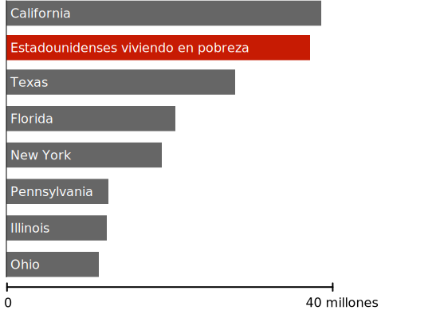

La riqueza mostrada a escala
US$1.000
US$68.000 (Renta promedio anual de los hogares de EE.UU.)
US$1 millón
US$1 mil millones
US$185 mil millones (riqueza de Jeff Bezos)
Jajaja, era una broma, estamos a un tercio del camino. Pero siga desplazando, hay más cosas que ver.
Incluso las fortunas de las personas muy ricas se ven empequeñecidas por la incomprensible riqueza del 0,0001% de la población.
Estas personas pueden considerarse fabulosamente ricas, y suelen oponerse a las políticas destinadas a reducir la desigualdad.
Pero muchas no han comprendido del todo el enorme abismo que les separa de los súper ricos.
Podemos tener un mundo en el que existan personas ricas, sin entregar casi todo el dinero a los súper ricos.
Ningún humano necesita o merece esa cantidad de riqueza.
Los 400 estadounidenses más ricos (US$3,2 millones de millones)
1 millón de millones de dólares es una cifra tan grande, que también podría decirse cualquier cosa y no se entendería. Así que en esta sección trataremos de entender la escala de esta cifra examinando lo que podría lograrse con varios trozos de esta riqueza.
A medida que avancemos, trate de tener en cuenta: toda esta riqueza está controlada por un grupo tan pequeño, que podría caber en un solo avión 747—con 260 asientos de sobra.
¿Qué podríamos hacer con el 10% de este dinero?
Vacunar a cada humano en la tierra contra el coronavirus
Basado en el costo de las vacunas y el costo de despacho, tomaría alrededor de US$200 mil millones vacunar a cada persona en la tierra, lo cual es aproximadamente el 6% de la riqueza controlada por 400 estadounidenses. Después de financiar este programa de vacunación, estos individuos todavía serían US$40 mil millones más ricos de lo que eran antes de la pandemia.
Incluso dejando de lado la desesperada necesidad humanitaria de una vacunación mundial, sigue habiendo un fuerte argumento de interés propio para que los países ricos lo hagan: cuanto más tiempo circule el covid en el mundo, más posibilidades habrá de que surja una variante resistente a la vacuna, y se deshaga todo el progreso que ya hemos conseguido con ella.
La Organización Mundial de la Salud está organizando actualmente un programa global de donación de vacunas que permita vacunar a alrededor del 20% de los residentes en los países pobres para finales de 2021, e incluso ese enfoque tiene substanciales carencias de financiación.
Erradicar la malaria permanentemente
La malaria o paludismo es una de las peores enfermedades infecciosas que ha padecido la humanidad, y posiblemente haya matado a más personas que cualquier otra enfermedad infecciosa de la historia. Solo en el siglo XX, la malaria mató a más personas que la peste negra.
Todas estas muertes son prevenibles. Tratar y prevenir la malaria es una ciencia bien entendida, practicada universalmente en el mundo desarrollado.
Se ha estimado que la malaria podría ser globalmente erradicada para el 2030 para un costo de alrededor de US$1,84 por persona en riesgo por año, o alrededor de US$100 mil millones en total. Esto sería alrededor del 3% de la riqueza actualmente en propiedad de los 400 estadounidenses más ricos.
Alrededor de 800 niños morirán por malaria hoy. Un pequeño grupo de personas súper ricas podrían impedirlo por una suma de dinero tan pequeña que nunca notarían siquiera su ausencia. Pero ellos deciden no hacerlo.
Acabar con toda la deuda médica morosa en Estados Unidos
Los estadounidenses tienen alrededor de US$81 mil millones en deudas médicas que están lo suficientemente atrasadas como para aparecer en su informe de crédito. Por lo general, se trata de deudas pequeñas, con un valor medio de US$207 dólares por persona.
Estas deudas dificultan el crédito de más de 50 millones de estadounidenses y perjudican a largo plazo sus opciones de vivienda, empleo y préstamo. El coste de reembolsar esta deuda dólar por dólar supondría alrededor del 2,5% de la riqueza controlada por 400 estadounidenses.
Sacar a cada estadounidense de la pobreza.
Población de estados de EEUU comparados con la pobreza, 2021
Cada una de las personas en Estados Unidos puede ser dejado encima de la linea de la pobreza con un subsidio por una sola vez de alrededor de US$10.000 por familia empobrecida (y alrededor de US$7.000 para individuos empobrecidos). El costo total sería de US$170 mil millones, un poco encima del 5% de la riqueza actualmente controlada por 400 individuos.
Puede parecer contraintuitivo que una subvención única pueda tener un impacto duradero en la pobreza crónica. Pero una de las verdades sorprendentes sobre la pobreza es que es fluida. Los estadounidenses entran y salen de la pobreza muchas veces a lo largo de su vida, y un buen año puede tener un efecto masivo y duradero.
Una gran cantidad de datos respaldan ahora la idea de que las transferencias únicas de dinero pueden transformar de forma permanente una economía local. Al recibir una ganancia inesperada, la gente invierte en su futuro. Vuelven a estudiar, obtienen un medio de transporte, pagan por el cuidado de los niños, pagan deudas debilitantes y hacen cualquier cosa para mejorar sus perspectivas profesionales y su futuro financiero.
En EE.UU., de todas las personas que salen de la pobreza en un año determinado, aproximadamente la mitad sigue fuera de la pobreza durante al menos cinco años después. Aproximadamente un tercio sigue fuera de la pobreza diez años después.
Esto no sería una solución permanente para todos los estadounidenses. Seguramente, algunos volverían rápidamente a la pobreza, y otros se enfrentarían a deudas tan grandes que el subsidio apenas supondría una diferencia. Pero para decenas de millones de estadounidenses, sería un acontecimiento que cambiaría su vida. Sería un programa social que definiría a una generación y que reconfiguraría nuestra economía durante las próximas décadas.
Proporcionar agua potable y acceso a baño para cada humano en la tierra.
Alrededor de 844 millones de personas no tienen acceso a agua limpia de ningún tipo. Alrededor del mismo número de personas no tiene acceso a un baño o una letrina de cualquier tipo, y por tanto defecan al aire libre.

Sin agua potable
El agua contaminada es una fuente importante de enfermedades, como el cólera, la disentería y la fiebre tifoidea. Se calcula que el agua contaminada mata alrededor de 829.000 personas cada año, lo que la convierte en una de las mayores causas de muerte en el mundo. El costo de proporcionar agua limpia y eliminación de residuos a todos los habitantes de la Tierra sería de unos US$240 mil millones, o el 7,5% de la riqueza controlada por los 400 estadounidenses más ricos.
¿Qué podríamos hacer con el 40% de este dinero?
Proporcionar permisos de maternidad y paternidad pagados a todos los estadounidenses durante los próximos 100 años
Los permisos laborales de maternidad y paternidad tienen un costo alrededor de US$12 mil millones por año. Esto es 0,39% de la riqueza controlada por 400 estadounidenses. Es el 5% de la riqueza que adquirieron sólo en 2020.
Si ellos repitieran ese pago cada año por los siguientes 100 años, sería igual al 39% de la riqueza que ellos controlan hoy.
Este es un programa más complejo de estimar que los otros considerados en esta página, porque el gasto sería continuo en vez de único, y el costo es altamente variable de acuerdo al tamaño del beneficio provisto. Aún así, usando la regla de reparto del 5% de la dotación los súper ricos deberían ser capaces de financiar un programa de licencia familiar 12 veces más generoso que el contemplado aquí para siempre y seguir siendo ricos a perpetuidad, incluso contando con la inflación.
Dar US$10.000 a cada hogar estadounidense
Mientras el coronavirus hacía estragos en Estados Unidos en 2020, a los trabajadores se les presentaba con frecuencia una disyuntiva aparentemente imposible entre la muerte por reapertura prematura y una depresión económica provocada por una cuarentena continuada. En esta falsa elección no se mencionaba la suposición de que los estadounidenses no podrían pagar sus gastos de subsistencia sin trabajo o sin un gasto público deficitario insostenible... ¿de dónde más podría haber salido el dinero?